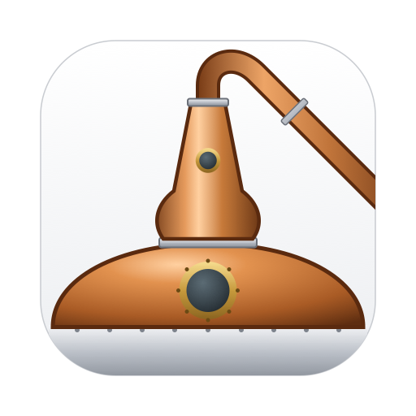
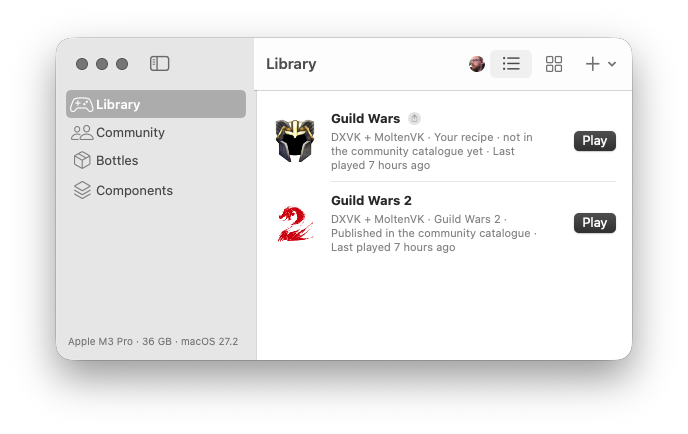

Windows games on your Mac, distilled into recipes.
Distiller installs and runs Windows games on Apple silicon Macs with Wine. Each game comes from a recipe: a shareable, hardware-aware description of exactly what it needs, proven by other players on Macs like yours.

What it does
A native Mac app with a command-line twin. No scripts, no guesswork: recipes are data, and every shared recipe has been installed and played before you see it.
Recipes, not scripts
A recipe names the Wine build, graphics layer, Windows components, settings and launch options a game needs. Recipes can't run commands on your Mac.
Tuned for your Mac
Hardware overlays adjust a recipe for your chip, GPU and memory, and ratings show how a recipe ran on Macs like yours.
Proven before it's shared
Before a recipe reaches the catalogue, Distiller installs the game from its publisher's official installer in a fresh bottle and the contributor plays it.
Your choice of graphics layer
D3DMetal from your own Game Porting Toolkit download, DXMT, DXVK or WineD3D, as swappable, versioned components.
Each game in its own bottle
Every game gets its own Wine prefix, cloned instantly on APFS, and big games can stay where they are on an external drive.
AI help when a game won't cooperate
Distiller has a built-in MCP server, so Claude, ChatGPT or a local model in LM Studio or Ollama can read a game's launch logs and crash dumps, inspect its program and your setup, and suggest recipe settings. It's read-only and off until you turn it on. How to connect it
Open source
MIT-licensed and built in the open. Recipes and reports live in a public repository anyone can review.
Popular in the catalogue
Games the community has recipes for. See them all.
How it works
- Set up onceDistiller's Setup Assistant installs Wine, winetricks and the open-source graphics layers, and imports D3DMetal from your own download.
- Pick a gameFind it here or in the app's Community tab and choose Install in Distiller. Distiller shows what it will do and asks first.
- PlayDistiller downloads the publisher's installer, applies the recipe and puts the game in your library.
- Share backMade a recipe for something new? Run the community check and submit it from the app.
Get Distiller
Signed, notarized downloads are on the way. Until then, build it from source: you need an Apple silicon Mac with macOS 14 or later and Xcode 16 or later.
git clone https://github.com/nullfx/distiller.git
cd distiller
Scripts/bundle-app.sh release
open dist/Distiller.appThe docs walk through the first run, installing games and sharing recipes.